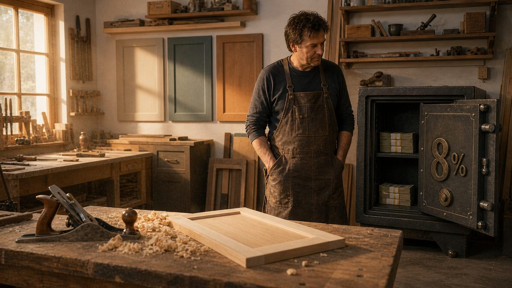

Захожу в чат мебельщиков и почти физически слышу, как «чайки стонут перед бурей». Стон один и тот же: Закон о защите прав потребителя — это несправедливо, бесчеловечно, антипредпринимательски. Закон людоедский, суды на стороне клиента, гарантия в три года выпивает кровь, экспертиза не помогает, штрафы душат, и вообще как с этим жить.
Стонать, надо сказать, дело довольно энергоэффективное. Мозгу не нужно ничего понимать, ни в чём разбираться, ничего менять. Стоны не требуют ни анализа, ни плана, ни действия. Ёжики, как известно, плачут, колются и продолжают свой путь к зелёному острову, туда, где их в очередной раз ждёт суд, экспертиза и весёлое перераспределение их денег в пользу клиента.
И с этим, в общем, ничего не сделать, если не поменять оптику. А поменять её сложно, потому что многие искренне верят: спасёт «хороший договор». Тщательно составленный, с правильными формулировками, с волшебными пунктами про сроки, ответственность и форс-мажор. Спойлер: не спасёт. Более того, в ряде случаев именно «хороший договор» становится для клиента дополнительным поводом для возбуждения.
Но обо всём по порядку.
Закон уравнивает не правовые статусы. Закон уравнивает силы
Здесь начинается главная путаница, из которой растут все обиды.
В нормальных деловых отношениях между равными сторонами действует принцип равноправия. У каждой стороны одинаковые права, одинаковые обязанности, одинаковый объём ответственности. Каждый защищает свои интересы и спорит, опираясь на договор. Всё по-взрослому.
Только вот загвоздка: у бизнеса и потребителя силы изначально не равны. У бизнеса есть юрист, бухгалтер, экспертиза, договорная база, отстроенные процессы, опыт сотни сделок и понимание, как устроены суды. У потребителя есть только он сам, его кухня и иногда жена. На стороне бизнеса работает система. На стороне клиента работает желание не быть обманутым и интернет.
Поэтому ЗЗПП не вводит равноправие. Он вводит равенство сил, что совсем не одно и то же. Чтобы уравнять силы, закон сознательно даёт потребителю юридическое преимущество. Презумпция вины продавца, гарантийные сроки, право на возврат, штрафы, неустойки, потребительский экстремизм как побочный продукт защиты. Всё это попытка сделать так, чтобы маленький человек со своей пятитысячной табуреткой имел шанс в споре с условным «Лерой Мерленом».
Идея, в общем, человечная и в большинстве стран мира работает похоже.
А чем тогда предприниматели недовольны
Тем, что закон не различает большой бизнес и малый. Для закона все продавцы продавцы.
ЗЗПП писали под взаимоотношения потребителя с настоящим, серьёзным бизнесом. С тем, у кого юридический департамент, страховые резервы, миллиардные обороты и возможность спокойно проиграть в суде сто дел в год, даже не заметив. Для такого бизнеса штраф в пятьдесят процентов и неустойка в один процент в день — это операционные издержки. Раздражающие, но не смертельные.
Когда тот же закон применяется к небольшой мебельной мастерской, ситуация резко меняется. У этой мастерской нет ни юриста на полставки, ни резервного фонда, ни возможности «договориться по-хорошему через свои каналы». У неё есть три монтажника, дизайнер, цех, четыре заказа в работе и кредит за станок. И вот в такой компании одна-единственная судебная история на серьёзную сумму это не операционная издержка. Это «чёрный лебедь».
Получается, что закон, который создавался для уравнивания сил, в применении к малому бизнесу делает ровно обратное. Он переворачивает чашу весов. Потребитель, у которого изначально не было ресурсов, получает мощную правовую опору. А малая компания, у которой ресурсов чуть больше, чем у потребителя, оказывается под катком, рассчитанным на корпорацию.
Это и называют «потребительским терроризмом». Хотя если посмотреть на это глазами клиента, который три месяца ждёт исправления дефектов, никакого терроризма он не видит. Он видит закон, который наконец-то ему помогает.
Если попробовать аккуратно собрать настоящие требования мебельщиков к Президенту, законодателю и судам, получилась бы примерно такая программа:
_Разрешите нам делать плохую мебель.__Выдайте нам болты, которые можно без последствий класть на клиентов.__Запретите клиентам быть недовольными.__Разрешите нам обещать одно, а делать другое._
Вслух эту программу, конечно, никто не озвучит. Но именно она зашита внутрь стона про «несправедливый закон», если вынуть из стона ритуальные слова про маржу и потребительский экстремизм.
Почему «хороший договор» не спасает
Это самая дорогая иллюзия в мебельной отрасли.
Собственник садится с юристом. Юрист, добросовестно отрабатывая гонорар, прописывает в договоре всё, что только можно: сроки, ответственность, форс-мажор, порядок приёмки, основания для отказа от претензий, особые условия по нестандартным размерам, оговорки про индивидуальное изготовление и ещё восемь пунктов мелким шрифтом. Собственник подписывает такой договор и выдыхает: «Ну всё, теперь меня не возьмут».
Берут. И берут именно потому, что договор хороший.
Дело в том, что в споре с потребителем условия договора, ущемляющие его права по сравнению с законом, ничтожны. То есть юридически их как будто и не было. Прописали, что гарантия на индивидуальный заказ три месяца? Суд скажет: «По закону два года, плюс эти три месяца ничтожны как ущемляющие». Прописали, что фурнитура не входит в гарантию? Ничтожно. Прописали, что покупатель не вправе требовать неустойку? Ничтожно. И так далее.
Но это ещё полбеды. Беда в том, что внешне хороший договор провоцирует более агрессивное поведение клиента, когда что-то идёт не так. Логика клиента простая: «Меня тут попытались обложить со всех сторон, значит, там точно есть, к чему придраться». Дальше клиент включается, ищет юриста или обходится без него, пишет претензию, идёт в суд и получает по закону всё, что закон ему даёт. Плюс моральный вред за то, что его попытались, как он считает, обмануть.
Иначе говоря, «хороший договор» в малом бизнесе работает не как броня, а как красная тряпка.
Это, конечно, не значит, что договор не нужен. Нужен. Но не как защита от ЗЗПП (от него договором защититься нельзя), а как инструмент управления ожиданиями клиента, фиксации договорённостей и снижения числа конфликтов, которые до суда не доходят. Это другая задача и другой жанр документа.
«Террористы», «терпилы» и первый звонок
Само слово «потребительский терроризм» требует отдельного разговора. Мне довольно часто присылают записи звонков от клиентов-«террористов» с просьбой посоветовать, как их утихомирить. И, честно говоря, примерно в 90% случаев я оказываюсь на стороне клиента. Даже не после того, как разобрался в сути конфликта. После того, как услышал, как ему ответили на первый звонок. После такого ответа я бы и сам в этом конкретном случае пошёл бы в «террористы».
Это важная подробность. Очень часто клиент превращается в «террориста» не до первого звонка, а в момент первого звонка. Точнее, в момент ответа на него. До звонка это просто расстроенный человек со сломанной мебелью. После того, как ему ответили в духе «по нашему договору вы не имеете права», «гарантия не распространяется», «вы сами сорвали бирку», он становится клиентом, у которого появилась миссия. И эта миссия теперь оплачивается из бюджета компании.
И это только видимая часть айсберга. Гораздо больше под водой «терпил». Тех, у кого тоже что-то сломалось, тоже не работает, но они молчат. Просто перестают рекомендовать, пишут одну фразу в отзыве и тихо переходят к другому мебельщику. Если бы все эти молчуны вдруг заговорили, большинству мебельщиков понадобились бы не юристы, а мыло и верёвка. Лучше Президенту писать письмо не об ужесточении ЗЗПП в пользу продавца, а с просьбой, чтобы терпилы оставались терпилами. Хотя есть закон попроще, и он работает безотказно: повесить на входе каждой мебельной фабрики табличку «Делай как для своих детей». Большинство возвратных историй закроется само.
И ещё одно важное наблюдение, ради которого вся эта статья и пишется. Возврат это не логика. Возврат это эмоция. Клиент не приходит за деньгами и не приходит за ремонтом. Он приходит с вопросом: «Зачем мне диван, у которого через два месяца сломалась ножка? Зачем мне кухня, у которой отлетают фасады? Я же не за это платил». Это эмоциональный вопрос. А логика и цифры в ответ на эмоцию только её усиливают. Поэтому юридически безупречный отказ почти всегда становится началом, а не концом проблемы.
Компании, у которых нет проблем с рекламациями, не уговаривают клиента не возвращать товар. Они учатся отвечать именно на эмоциональный вопрос «зачем мне это», латентно встраивая ответ в каждую реплику диалога о поломке. Когда клиент чувствует, что его понимают и что проблему решают без аккомпанемента из договорных оговорок, желание идти в суд тает само.
Что реально делать малому мебельному бизнесу
Не молиться, не злиться и не искать серебряных пуль. Делать четыреспокойных вещи.

Первое: понять и принять реальность. Закон такой, какой есть. Он не изменится под вас, под кризис, под индивидуальный пошив или под то, что у вас «всего три человека в цеху». В обозримой перспективе ЗЗПП будет ровно таким же или ещё жёстче. Это не несправедливость, это правила игры. И эти правила нужно прочитать один раз внимательно, желательно с юристом, который специализируется на потребительских спорах, а не на корпоративном праве. Вы должны точно знать, какие риски у вас есть, сколько они стоят, как часто они срабатывают и при каких сценариях.
Второе: заложить риск в себестоимость. Если вы продаёте кухню за 500 тысяч, вы должны исходить из того, что условно 5% этой суммы деньги уже не ваши. Это деньги фонда устранения недостатков, гарантийного ремонта, экспертиз и судебных историй. Полезно мыслить так: каждый десятый или каждый двадцатый диван может вернуться (берёте свою цифру по фактической статистике вашей категории), и это не страшный сценарий, а нормальная статья себестоимости. Не можете продать за 500 с этим резервом? Продавайте за 525. Если рынок не берёт за 525, значит, эта ниша не для вас, или ваши процессы дают слишком много брака, и резерв должен быть выше. В обоих случаях ответ не в том, чтобы оставить себя без резерва. Ответ в том, чтобы менять или цены, или процессы.
Третье: изолировать эти деньги. Самая распространённая ошибка: заложили в цену, забрали в общий кэш, потратили на закупку, оборотку, рекламу или зарплату. Когда прилетит рекламация или суд, доставать деньги придётся из текущей операционной деятельности, то есть вырезать из живого. Поэтому фонд должен быть физически отделён. Отдельный счёт, отдельная сумма, неприкосновенный запас. По моей прикидке для мебели в малом бизнесе размер фонда должен быть не меньше месячного объёма продаж, то есть примерно 8% годового оборота. В других нишах свои цифры и риски, но логика одна и та же.
Четвёртое: действовать. Это значит не только сформировать фонд, но и перестроить отношения с клиентом так, чтобы до суда дело доходило как можно реже. Быстрая реакция на претензии. Готовность исправить за свой счёт даже то, что вы формально могли бы не исправлять. Документация процессов, фото на этапах, подписанные акты. Это всё не отменяет ЗЗПП, но сильно уменьшает число клиентов, у которых появляется внутренний повод включить юриста.
И главное в этой работе: переучить тех, кто отвечает на первый звонок. Не «по нашему договору», не «гарантия не распространяется», не «вы сами виноваты». А: «понимаю, расскажите подробнее, что у вас случилось». До первого звонка клиент со сломанной мебелью ещё не «террорист». После того, как ему ответили в стиле «вы не правы», он им становится. И это, простите, целиком на стороне компании, а не закона.
Главное
Маленький бизнес проигрывает не потому, что ЗЗПП плохой. И не потому, что клиенты обнаглели. Маленький бизнес проигрывает, когда он держит риски в голове, а не на счёте. Когда он надеется на договор вместо процессов. Когда он стонет вместо того, чтобы считать.
Закон не изменишь - изменить можно только себя как предпринимателя.Заложить риск в цену, отделить деньги от оборота, перестать обижаться на то, что государство встало на сторону клиента, и спокойно работать дальше. С резервом, с трезвой головой и без иллюзий насчёт волшебных пунктов в договоре.
И последнее. Ракурс «клиент-виноват, помогите чем можете» это ракурс, который бизнес убивает. Не потому что неприятен лично мне, а потому что закрывает зрение на собственные ошибки и фиксирует фабрику в позе обиженной жертвы. Ракурс «что мы сделали не так, что клиент пришёл к нам с этой эмоцией» это ракурс действенного видения. Именно он бизнес развивает и улучшает. Выбор между этими двумя оптиками и есть главное предпринимательское решение в работе с рекламациями. Закон тут уже ни при чём.
И, конечно, можно поблагодарить автора в комментариях. Или поспорить, это тоже полезно. В споре с автором обычно никто не разоряется, в отличие от спора с потребителем.